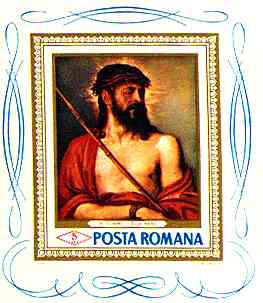

|
The paintings were hit by bullets in December 1989, during the popular uprising against the dictator Ceausescu and the communist regime. On the right side you can see the impact of the bullet (compare with the stamp on the left side, issued in 1968). This masterpiece was painted by Stefan Luchian and represents Old Nicholas, the Cobza-player. |  |
All stamps of the set mention on the top: Tablouri împuscate = Shot Paintings.
 |
 |
 |
 |
From left to right: I. Andreescu. Woman in White. / S. Luchian. Safta the Florist. / J.Brueghel. Vase of Flowers. / G.B.Paggi. Madonna and Child.
 |
The painting "Ecce Homo" is the work of the Italian master Tiziano Vecellio. It was the masterpiece of the Brukenthal Museum in the Romanian town Sibiu (Hermannstadt). The painting disappeared shortly after it was reproduced on a stamp and on a souvenir sheet (the date of issue was March 28th, 1968). |  |
In the year 1956, after 39 years, the government of the former USSR returned to Romania the Romanian works of art, evacuated in 1917 during the WW I. Among those were also the paintings of the Romanian artist Ion Andreescu. Unfortunately a number of these paintings was replaced by fakes. Source: Ioan Andreescu, p.9. ALCOR EDIMPEX, June 1997, ISBN 973-97901-4-3
| Revised:
12/04/08. Copyright © 1997 - 1999 by Victor Manta, Switzerland. All rights reserved in all countries, |
|